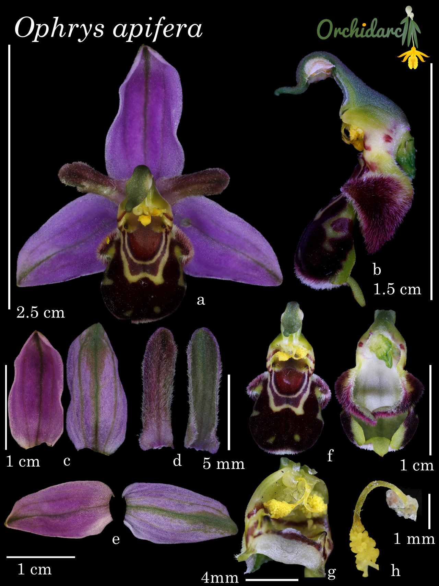

Essays, field reports, and notes from our research and films. Updated occasionally.

What the bee orchid can tell us about the bumblebee that disappeared.
Read ↁE/span>
Notes on the discovery, description and publication of ÁEDinedema mariae EOrchidarc's first contribution to the taxonomic record of Mexican orchids.
Read ↁE/span>
How we mapped the largest known Cypripedium population in Mesoamerica Eand why the work is just beginning.
Read ↁE/span>
The making of Lily of Allsaints Ea year in the cloud forest, the cemeteries, and the family histories of Veracruz.
Read ↁE/span>
Miniature cloud-forest orchids, micro-endemism, and the urgent need to map hidden populations before they disappear.
Read ↁE/span>